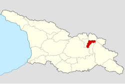

ფშავი

ფშავი — საქართველოს ისტორიულ-გეოგრაფიული მხარე. ისტორიულად იგი ხევსურეთთან ერთად ფხოვად იწოდებოდა. უძველეს წყაროებში სწორედ „ფხოვი“ გვხვდება, ფშავი და ხევსურეთი შედარებით გვიან დამკვიდრებული სახელწოდებებია.

ფშავი არაგვის ხეობაში მდებარეობს და დღევანდელ დუშეთის მუნიციპალიტეტს მოიცავს. მისი ფართობი დაახლოებით 550 კმ²-ია. ფშავს ესაზღვრება: ჩრდილო-აღმოსავლეთით - კავკასიონის მთავარი ქედი, რომელიც მას ჰყოფს თუშეთისა და პირაქეთა ხევსურეთისაგან, დასავლეთით - პირაქეთა ხევსურეთი, გუდამაყარი, ხანდო და ჭართალი, სამხრეთით - შიდა ქართლი, აღმოსავლეთით - ერწო-თიანეთი. ფშავი ორად იყოფა: ფშავის არაგვის სათავიდან ორწყლამდე უკანა ფშავის თემია, ხოლო ორწყალს ქვემოთ, ფშავის არაგვის ქვემო წელში, მაღაროსკარის თემი. გეოგრაფიულად ფშავი მდებარეობს ქართლ-კახეთის საზღვარზე და წარმოადგენს ამ ორი კუთხის მთიანეთს, მაგრამ ტერიტორიულ-ადმინისტრაციულად ფშავი წინათ კახეთის პროვინციაში შედიოდა, ხოლო თანამედროვე ადმინისტრაციულ-ტერიტორიული დაყოფით ფშავის მთელი ტერიტორია შედის მცხეთა-მთიანეთის მხარის დუშეთის მუნიციპალიტეტში. სამხრეთი საზღვარი იწყება შარახევიდან და ორწყალ ფშავის ხევით (შუაფხო-უკანაფშავი) მიემართება აღმოსავლეთით და ეკვრის კავკასიონის მთავარ ქედს. ფშავის ზედაპირი სამხრეთით დაგეზებულია. იგი თუშეთ-ხევსურეთისაგან შედარებით უფრო დაბალია. მისი ჰიპსომეტრული სიმაღლე 1000-3000 მ-ია, ამიტომ ფშავის მიდამოს არ ამშვენებენ თეთრწვერად შევერცხლილი მყინვარები, თუმცა მისი ბუნება უფრო მრავალფეროვანია, ვიდრე ხევსურეთისა და თუშეთისა.